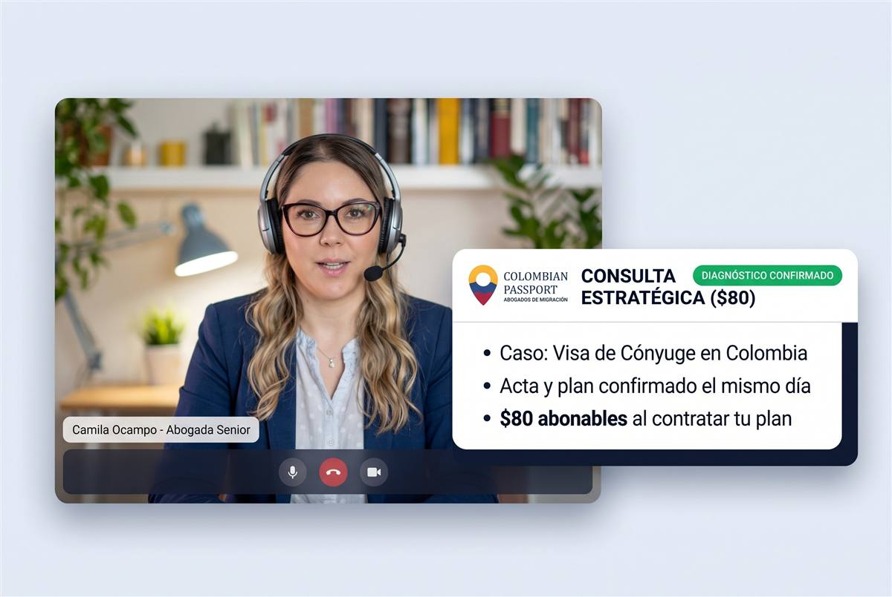
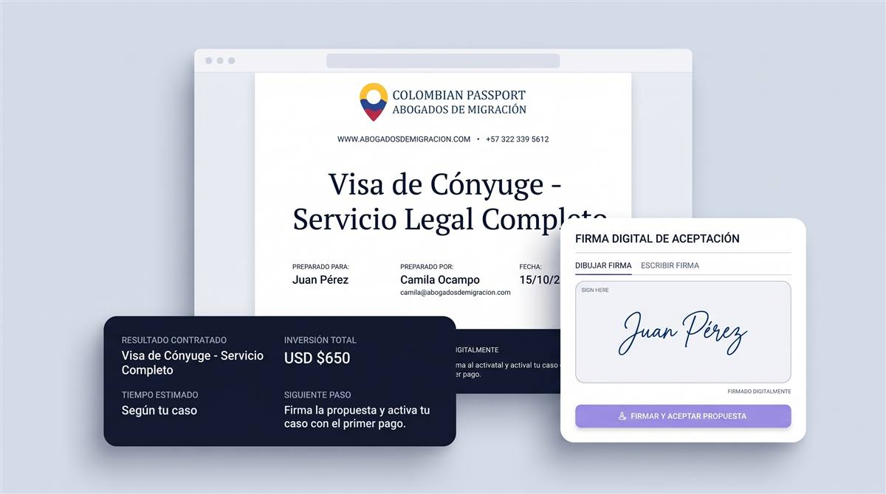
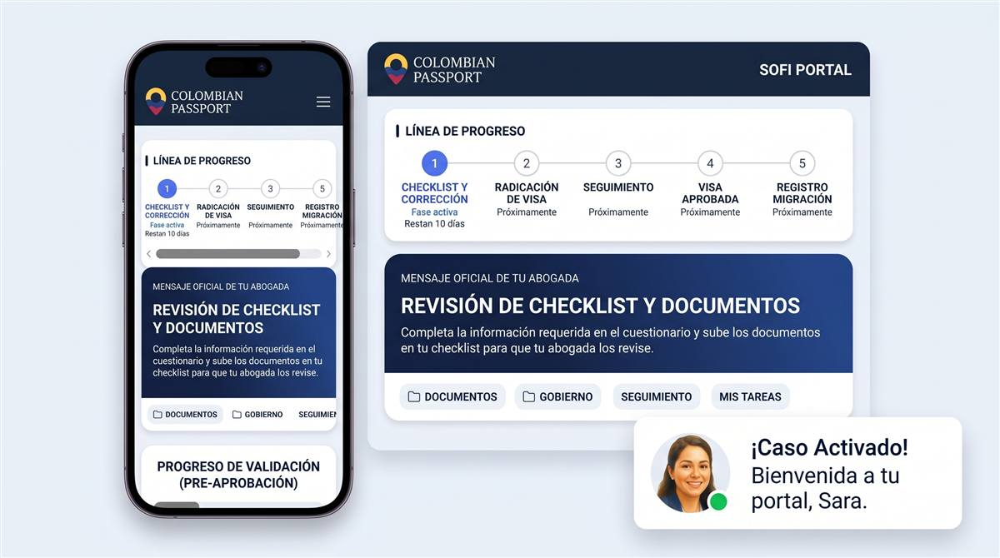
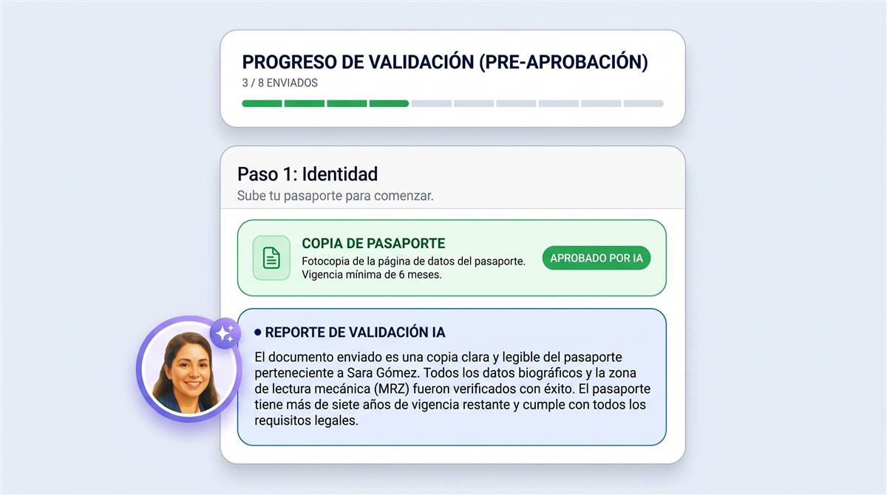
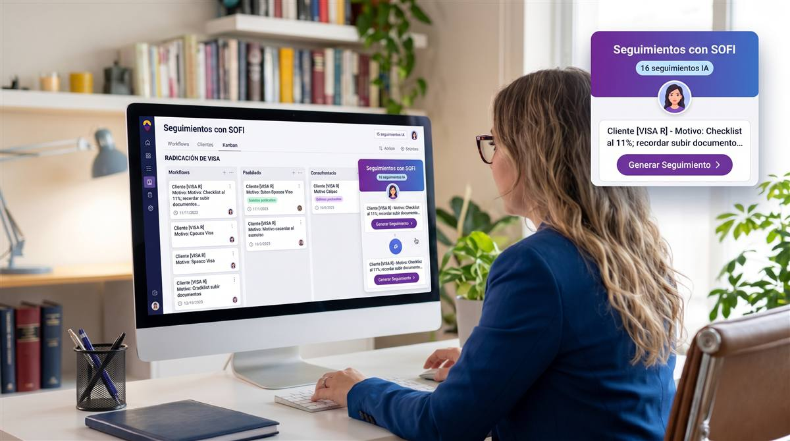
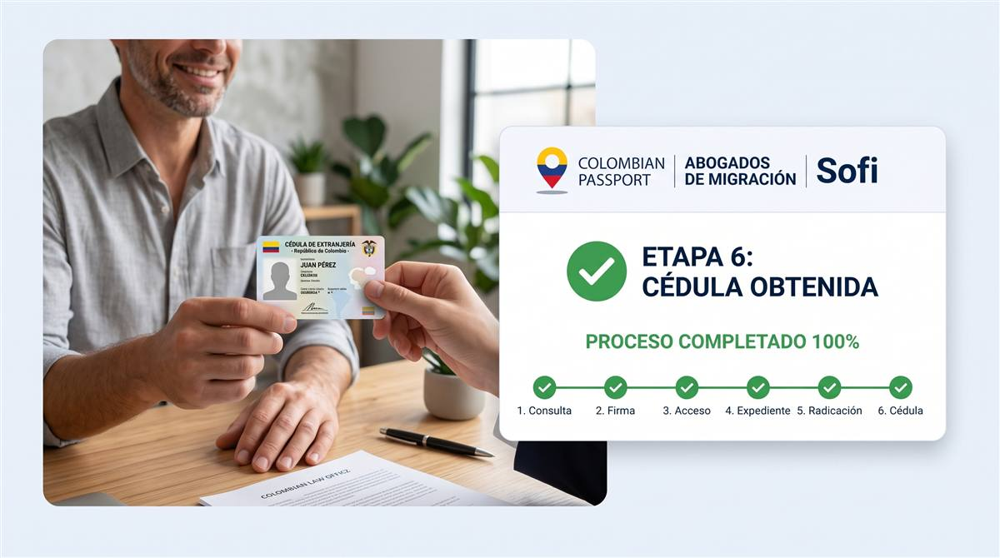

Primera vez que abrimos el programa completo. El precio y los compromisos quedan fijos para quien entre en esta cohorte. No es un descuento: es acceso. Después del 15 de enero, la siguiente cohorte tendrá nuevas condiciones.
Lo que cambia cuando delegas de verdad
El trámite no es difícil por la ley. Es difícil por los proveedores, las plataformas, los plazos y el miedo a equivocarse. Esto es lo que quitamos de tu lado.
Cuatro compromisos, por escrito
No prometemos tu visa: nadie honesto puede. Nos hacemos cargo de todo lo demás —el esfuerzo, el tiempo, el riesgo y el acompañamiento— para que tu única tarea sea firmar.
Cero papeleo
Nosotros contactamos a cada proveedor: antecedentes, huellas, apostillas, traducciones, certificado médico y póliza. Tú apruebas, firmas lo que solo tú puedes firmar y apareces en la cita. No persigues un papel más.
72 horas para radicar
Desde que tu expediente está completo, radicamos en 72 horas. Si no lo hacemos, te devolvemos la consulta de $80. Sin excusas de plataforma.
Inadmisión cubierta
Si Cancillería inadmite, re-radicamos sin honorarios las veces necesarias — y esta vez el nuevo estudio oficial de $56 lo pagamos nosotros. No cubre el rechazo definitivo.
Hasta la cédula y el primer mes
El trámite no termina con la visa: cita de cédula, EPS, cuenta bancaria y lo básico para aterrizar. Incluido, no como extra.
Y si el error es nuestro: cuando una inadmisión se debe a un error de preparación imputable a la firma y no puede corregirse, devolvemos el 50% de los honorarios. Preferimos responder por el trabajo antes que discutirlo.
Para quién es — y para quién no
Aceptamos pocos casos, y no todos. Decir que no a tiempo también es parte del servicio.
Es para ti si…
- Tienes una vía legal clara (la confirmamos en la consulta).
- Puedes cubrir honorarios y tasas, y prefieres no perseguir un papel más.
- Quieres una abogada senior de principio a fin, no un call center.
No es para ti si…
- Buscas que alguien te prometa la aprobación. Nadie honesto puede hacerlo.
- Tienes un rechazo definitivo: hay que esperar 6 meses y evaluar otro trámite.
- No puedes cubrir las tasas del Estado (estudio, expedición y cédula).
La comparación que importa
No es “abogado vs. no abogado”. Es “quién responde cuando algo sale mal”.
| Por tu cuenta | Cédula en Mano | |
|---|---|---|
| Quién arma el expediente | Tú, con guías y ChatGPT | Abogada senior + IA de validación |
| Quién consigue apostillas y traducciones | Tú, proveedor por proveedor | Nosotros coordinamos cada uno |
| Quién responde un requerimiento | Tú, sin saber qué espera Cancillería | Tu abogada, con táctica legal |
| Si inadmiten | Vuelves a pagar estudio y empiezas | Re-radicamos sin honorarios y cubrimos el estudio |
| Tiempo típico | 14–17 semanas | 7 semanas recomendadas · radicación en 72 h |
| Quién responde por el error | Nadie | La firma: 50% de honorarios si es nuestro |
Los tiempos dependen de Cancillería y de la visa. La radicación en 72 h aplica desde que el expediente está completo.
Tu caso es demasiado importante para el ensayo y error
Si tu futuro, tu familia o tus inversiones dependen de una visa colombiana, un solo error puede costarte meses de retraso, dinero o un rechazo directo. No necesitas un abogado para pedir tu visa, pero creemos que es una inversión inteligente.
"Mi consejo: no intenten este proceso sin asistencia profesional. Contraten a este eficiente equipo."
— Steven Russo, reseña real de Google verificada
Conoce a tu abogada: Camila Ocampo

Fundadora y Socia Directora
Abogada de la Universidad de los Andes (2007). Más de 15 años de práctica, estudios avanzados en Derecho y Migración (Uniandes, 2025). Fundó Colombian Passport en 2024 con una regla: tu caso nunca es un expediente más — tratas directamente con ella, de inicio a fin.
Práctica 100% senior. Sin juniors en casos.
Solo aceptamos casos con vía legal clara — y lo apostamos todo a tu visa. La misma abogada de inicio a fin.
Clientes que delegaron el papeleo
"¿Qué puedo decir de esta empresa y su equipo de abogados? En resumen, son excelentes, cultos, sinceros, actualizados con la ley a medida que cambia, y un equipo minucioso de abogados profesionales y honestos. Mi experiencia con Camila y su equipo ha sido nada menos que ejemplar; marcan el estándar que todos los abogados y empresas deberían tener. Su enfoque es muy profesional. Tuvimos una videollamada en la que revisamos mi situación actual, los requisitos, e hicimos una revisión preliminar del proceso y todos los resultados posibles. Me animaron a preguntar sobre todos los aspectos del proceso y los resultados posibles. Me interesaba mi caso y una visa de cónyuge, y me entregaron documentos escritos para ambos procesos junto con la documentación que yo debía aportar. Tras entregar los documentos, autenticados o apostillados, el proceso avanzó sin tropiezos con actualizaciones periódicas para mantenerme informado. During my process we ran into issues Durante mi proceso surgieron temas que yo desconocía. Fueron muy comprensivos, me explicaron lo necesario, los resultados posibles según las nuevas circunstancias, revisaron toda la documentación y me dieron la mejor opción para avanzar. En resumen, mi solicitud fue aprobada. Programaron mi cita biométrica, me dieron direcciones, horarios, los documentos que debía llevar, completaron algunos documentos necesarios (en español) y me guiaron en todo el procedimiento de la entrevista. Los honorarios fueron razonables (menos de lo que me cotizaron otras firmas), el proceso de apostilla fue excelente, terminado a tiempo y muy rentable (otras empresas me cobraban mucho más y con plazos mucho más largos). Me enviaron empresas que fueron a mi apartamento para las huellas y también citas médicas para los exámenes físicos. Importante para mí era una empresa que se comunicara en inglés (eran bilingües) y pudiera comunicarse con fluidez en inglés; fueron los mejores. Coordinaron todas las traducciones de documentos y verificaron que estuvieran correctas. Más importante aún: fueron receptivos y atentos a mis necesidades, y nunca me prometieron de más ni me dieron falsas esperanzas. Fueron totalmente honestos durante todo el proceso. Esta es una organización de servicio integral y la recomiendo ampliamente a TODAS las personas que quieran obtener una M-Visa para Colombia. Esta gente sabe lo que hace, conoce la ley y tiene varias opciones disponibles para su circunstancia específica dentro o fuera de Colombia."
"Tuve una experiencia fantástica trabajando con Camila. Me la recomendaron dos amigos extranjeros en Manizales que no se conocían entre sí, así que pensé que era una buena señal. Ojalá hubiera trabajado con ella desde el principio. Intenté tramitar mi visa de nómada digital por mi cuenta para ahorrar dinero, pero al enviar la solicitud, me la devolvieron inadmitida, así que acudí a Camila en busca de ayuda. Enseguida supo cómo mejorar mi solicitud y aumentar mis posibilidades de aprobación. También me dijo que había realizado muchos trámites innecesarios y pagado por servicios notariales, apostillas y traducciones innecesarias para ciertos documentos. Me ayudó a corregir la solicitud y a volver a presentarla, y me la aprobaron en una semana. Camila hizo que el proceso fuera mucho más fácil y menos estresante, ¡la recomiendo ampliamente!"
Más de 80 reseñas reales
Firma cinco estrellas en Google y Top 3 en Lawzana.
Pregunta tu caso por WhatsApp →Cómo funciona: de la llamada a la cédula, sin caos
Un proceso diseñado para que nunca persigas un papel ni te preguntes qué sigue. Tecnología + abogada senior, de inicio a fin.

1Consulta estratégica ($80)
Camila diagnostica tu caso en llamada y confirma si hay vía legal clara. El mismo día recibes el acta y tu propuesta por escrito, con el precio fijo.

2Firma y primer 50%
Firma digital, factura legal automática y pago con tarjeta. Sin anticipos en efectivo ni vueltas. La consulta de $80 queda abonada.

3Nosotros reunimos el expediente
Coordinamos antecedentes, huellas, apostillas, traducciones, certificado médico y póliza. En Sofi ves qué falta y qué ya está listo, desde el teléfono.

4La IA revisa, la abogada decide
La IA extrae datos, genera plantillas y detecta errores de tipeo. Tu abogada pone el criterio legal final antes de radicar.

5Radicación + segundo 50%
Radicamos en SITAC dentro de 72 horas con el expediente completo. Trackeamos a diario, respondemos requerimientos y te avisamos cada vencimiento.

6Cédula y primer mes resuelto
Registro de visa, cita de cédula, EPS, cuenta bancaria y SIM. La misma abogada que te recibió te acompaña hasta el final.
Tu tranquilidad, por sistema: Sofi 24/7 · IA que valida antes de radicar · recordatorios de vencimientos · WhatsApp directo con tu abogada · factura y pagos online · la misma senior de inicio a fin.
Un precio fijo. Un cupo real.
$1.290 USD de honorarios · 50% a la firma y 50% a la radicación · 15 casos en la cohorte de enero de 2027.
Cédula en Mano
Tu visa, tu cédula y tu primer mes — nosotros hacemos el trabajo.
Para quién: quien tiene una vía legal clara y prefiere delegar el expediente completo, no solo la radicación.
$1.290 USD
USD · honorarios · 50% a la firma / 50% a la radicación
- Todo el servicio de visa: documentos, cartas, SITAC y seguimiento
- Coordinación total de terceros: antecedentes, huellas, apostillas y traducciones
- Certificado médico y póliza de salud agendados por nosotros
- Radicación en 72 horas con expediente completo
- Respuesta a todos los requerimientos de Cancillería
- Re-radicación por inadmisión sin honorarios + estudio de $56 cubierto
- Registro de visa y todas las citas de cédula
- Primer mes resuelto: EPS, cuenta bancaria y SIM
- Revisión de residencia fiscal y regla de 183 días
- Abogada senior de principio a fin
- Visa de Beneficiario: +$300 por persona
La consulta de $80 se abona al contratar.
Nuestra promesa: si Cancillería inadmite tu solicitud, la volvemos a radicar sin cobrarte honorarios, las veces necesarias hasta la aprobación — y en esta cohorte cubrimos el nuevo estudio oficial de $56 USD. No cubre el rechazo definitivo.
Cómo se paga: reservas la consulta de $80 → Camila confirma tu caso y el precio por escrito → contratas con la consulta abonada: 50% a la firma y 50% a la radicación → tu abogada ejecuta y te mantiene al tanto de cada paso.
Qué NO incluye: las tasas del Estado (estudio $56, expedición según visa, cédula $294.000 COP) y los costos de terceros (apostillas, traducciones, antecedentes, seguro). Se pagan al costo, con factura. Tampoco cubre el rechazo definitivo.
Lo que se paga al Estado y a terceros
- Estudio de la visa: $56 USD por cada radicación (en esta cohorte lo cubrimos si hay inadmisión).
- Expedición de la visa: V $183 / M $279 / R $408 USD, solo si la aprueban.
- Cédula de extranjería: $294.000 COP.
- Apostillas, traducciones, antecedentes y seguro: según proveedor y país, con factura.
Respuestas directas, antes de preguntar
¿Qué significa exactamente “no toco un papel”?
Que no persigues proveedores ni plataformas. Nosotros contactamos, agendamos y coordinamos antecedentes, huellas, apostillas, traducciones, certificado médico y póliza. Tú firmas lo que solo tú puedes firmar —poderes, declaraciones, tu examen médico— y apareces en las citas. No significa que no existan documentos: significa que no los persigues.
¿Qué incluye y qué no incluye?
Incluye los honorarios del servicio completo de visa, la coordinación de terceros, la radicación en 72 horas, la respuesta a requerimientos, la re-radicación por inadmisión sin honorarios con el estudio de $56 cubierto, el registro de visa, las citas de cédula y el primer mes resuelto (EPS, banco y SIM). No incluye las tasas del Estado, los costos de terceros ni el rechazo definitivo.
¿Cuánto cuesta y cómo se paga?
$1.290 USD de honorarios, en dos pagos: 50% a la firma de la propuesta y 50% a la radicación. Con tarjeta y factura legal. La consulta de $80 se abona al contratar. Cada beneficiario suma $300.
¿Y si inadmiten mi solicitud?
La volvemos a radicar sin cobrarte honorarios, las veces necesarias hasta la aprobación, y en esta cohorte cubrimos el nuevo estudio oficial de $56 USD. No cubre el rechazo definitivo: si Cancillería rechaza de forma definitiva, hay 6 meses de espera y hay que evaluar otro trámite.
¿Y si mi caso no es viable?
Te lo decimos en la consulta y no te vendemos el programa. Si no hay vía legal clara, te devolvemos los $80 y te explicamos por qué. Preferimos un no honesto hoy a un expediente condenado en tres meses.
¿Por qué solo 15 cupos?
Porque cada caso lo diagnostica Camila y lo ejecuta una abogada senior. Quince es lo que podemos hacer en una cohorte sin bajar la calidad ni convertirte en un expediente más. Cuando se llenan, se cierra.
¿Aplica a cualquier visa? ¿Puedo hacerlo desde mi país?
Aplica a cualquier visa colombiana con vía legal clara: pensionado, nómada digital, cónyuge, rentista, inversionista, trabajador, residente y las demás. Se puede hacer desde Colombia o desde tu país de residencia, 100% en línea. No aplica a rechazos definitivos ni a casos sin ruta legal.
¿Qué pasa si no alcanzo la cohorte de enero?
Entras a la lista de espera de la siguiente cohorte y te avisamos antes de abrirla. No pierdes la consulta: si ya la hiciste, el diagnóstico y el acta siguen vigentes.
Consulta Migratoria Estratégica
Con Camila Ocampo & Associates
Resolvemos tu caso y confirmamos si Cédula en Mano es tu vía: perfil, tiempos, costos y estrategia.
- Videollamada privada de 1 hora para diagnóstico legal.
- Acta y propuesta por escrito el mismo día, con el precio fijo confirmado.
- Plantillas incluidas: te damos el modelo de carta de solicitud y te guiamos para diligenciarla.
Consulta: $80 USD · 100% abonables a tu caso
Pago seguro · Confirmación inmediata · Horas en tu huso horario